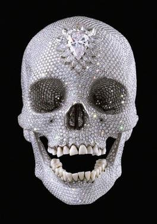

For the Love of God
Damien Hirst · 2007 · Platinum, diamonds and human teeth
In copyright. Look and learn: shown for study, not for download.
The base is a human skull bought in a shop in Islington, thought to be that of a 35-year-old European who lived between 1720 and 1810. The Piccadilly jewellers Bentley & Skinner set 8,601 diamonds over a platinum cast of it, and the teeth are real human teeth. According to the BBC it cost around £14 million to produce. Hirst said it was sold in August 2007 for £50 million; in January 2022 he stated that he still owned it with the White Cube gallery and undisclosed investors.